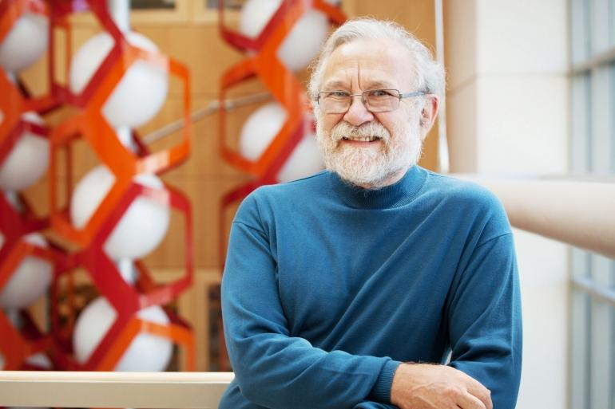

🧫 小胞体（しょうほうたい）は、細胞の中にある「タンパク質工場」のことで、この工場で不良品が増えると「小胞体ストレス」というピンチになります。でも細胞はそんなピンチに、ただ何もしないわけではありません。自分で異常を感じて、修復したり、生産を止めたりするのです！
この「仕組み」を明らかにした科学者たちがいます。ここでは5人の博士たちの実験をわかりやすく紹介します。
① 森和俊博士の実験 — 細胞はどうやって異常に気づくのか？
1990年代、森博士は「細胞が小胞体の中の異常なタンパク質に気づく仕組み」に興味をもちました。当時はまだ誰もそのセンサーを知りませんでした。
① 酵母（パンを作る小さな細胞）を使う。
② ツニカマイシンという薬を加える → 小胞体の中で「変な形のタンパク質」をあえて大量に作らせる。
③ すると細胞は「BiP（修理屋さん）」をたくさん作りはじめた！
④ 次に、遺伝子を1つずつ壊して「異常を感じられなくなった細胞」を探した。
⑤ 見つかった遺伝子が「IRE1」！これがセンサーだった。
正常細胞 → 薬を加える → 小胞体内に ●●● 異常タンパク質が増える
→ 細胞が反応！ → 「BiP（修理屋さん）」を増産 → センサーIRE1を発見
💡 つまり森博士は、細胞が異常を感じるうえで重要なセンサーの一つである「IRE1」を明らかにしました。UPR全体は、複数の研究者の発見が積み重なって解明されてきた仕組みです。
② Peter Walter博士の実験 — センサーがどのように命令を出すのか？
森博士が見つけたセンサー「IRE1」。しかし、IRE1が異常を感じたあと、細胞はどのようにして「修理せよ！」と命令を出すのでしょうか？Walter博士はその謎に挑みました。
① IRE1は異常を感じると、RNAを切る酵素（RNase）として働くことを発見。
② ターゲットは「XBP1」というRNA。ふつうの形のXBP1は、司令官としてはほとんど働けない。
③ IRE1がXBP1のRNAを切り、細胞がもう一度つなぎ直すと…
④ なんと「XBP1s（超強い司令官）」に変身！
⑤ XBP1sが核に入り、「BiPを増やせ！」「不良品を分解しろ！」と命令を出す。
ストレス → IRE1 🔪✂️ → XBP1 → 切ってつなぐ → XBP1s（最強司令官）→ 「修理部隊を増やせ！」

🌟 Walter博士のすごいところは、「RNAを切ってつなぎ直すことで、細胞がその場で強力に働く司令官XBP1sを作り出す」という新しい仕組みを見つけたことです。
③ David Ron博士の実験 — ストレス時に生産を止めるブレーキ
さて、異常を感じて司令官までできた。でもそれだけでは足りません。これ以上新しいタンパク質を作り続けると、もっと混乱します。そこでDavid Ron博士は「生産ラインを一時停止する仕組み」を探しました。
① 細胞にストレスをかけると、タンパク質の合成が急に止まることを発見。
② 原因を調べると「PERK（パーク）」という分子がブレーキ役をしていた。
③ PERKは「eIF2α」というスイッチをリン酸化して、タンパク質合成の開始を強くおさえる。
④ PERKがない細胞では生産を十分に減らせず、細胞が壊れやすくなることを証明した。
小胞体パンク！ → PERKがブレーキをかける → リボソーム「ゴゴゴ…停止」 → これ以上不良品を増やさない！

✅ Ron博士は、細胞がピンチのときにタンパク質生産を全体として減速させる仕組みを明らかにしました。この発見がなければ、UPRの全体像は不完全なままでした。
④ Amy Lee博士の実験 — 最初の「修理屋さん」を発見した先駆者
みなさん、この分野で一番最初の「最初の一歩」を踏み出したのは誰だと思いますか？それはAmy Lee博士です。1980年代、彼女は「細胞から糖をとると特定のタンパク質が増える」という不思議な現象をみつけました。
① 細胞から栄養（グルコース）を取ると、あるタンパク質が増える。
② でも「本当に栄養不足が原因？」と疑問をもつ。
③ そこで栄養はたっぷり与えたまま、「タンパク質の形を壊す薬」を加えた。
④ すると、栄養があっても同じタンパク質が爆発的に増えた！
⑤ これが「GRP78（BiP）」で、小胞体の中で働くシャペロン、つまり修理屋さんだった。
栄養たっぷり + 形を壊す薬 → 修理屋さんGRP78が大量発生 → 「不良品がたまると修理屋が増える」という現象の発見！
🎯 Amy Lee博士がいなければ、森博士もWalter博士も「何を調べればいいか」わからなかったでしょう。彼女はUPR研究の「土台」を作った科学者です。
⑤ Laurie Glimcher博士の実験 — XBP1が病気と直結する証明
最後は少し視点が違います。Glimcher博士は免疫の専門家です。彼女は「XBP1」という司令官に注目し、マウスを使った大胆な実験をしました。
① XBP1がまったく作れないマウス（ノックアウトマウス）を作る。
② 予想: 免疫の働きが弱くなるはずだった。
③ しかし結果は逆！マウスの腸が勝手に炎症を起こしてしまった。
④ つまりXBP1がないと小胞体ストレスが強まり、腸の細胞の働きがこわれて炎症が起こりやすくなる。
⑤ さらにXBP1がないと、インスリンを作る細胞が壊れて糖尿病になることも発見。
XBP1あり → 腸は落ち着いている
XBP1なし → 🔥腸で大炎症！→ 炎症性腸疾患や糖尿病のリスク増加

🌟 Glimcher博士の実験は、小胞体ストレス応答の異常が、実際の病気（炎症性腸疾患・糖尿病など）に深く関わることを示しました。細胞の中の出来事が、そのまま私たちの病気の理解につながることを示したのです。
📚 まとめ — 5人の実験がつなぐ「細胞の大発見」
🥇 Amy Lee博士 : 修理屋さん「GRP78/BiP」を最初に発見
🥈 森和俊博士 : 異常を感じるセンサー「IRE1」を発見
🥉 Peter Walter博士 : IRE1がRNAを編集して司令官「XBP1s」を作る仕組みを解明
🏅 David Ron博士 : 生産を止めるブレーキ「PERK」を発見
🏆 Laurie Glimcher博士 : XBP1が免疫・炎症・糖尿病と直結することを証明
これらの実験のおかげで、今では小胞体ストレス応答（UPR）がアルツハイマー病、がん、糖尿病などにどう関わるのかが研究されています。UPRは本来、細胞を守るための防御反応ですが、それが強すぎたり、うまく働かなくなったりすると病気に関わることがあります。今日から「細胞の中では毎日センサーが働き、司令官が飛び回っている」ことをイメージしてみてください。きっと、からだの見方が変わるはずです。
🔍 さらに詳しく知りたい人は「UPR」「IRE1」「XBP1s」「シャペロン」で調べてみよう！